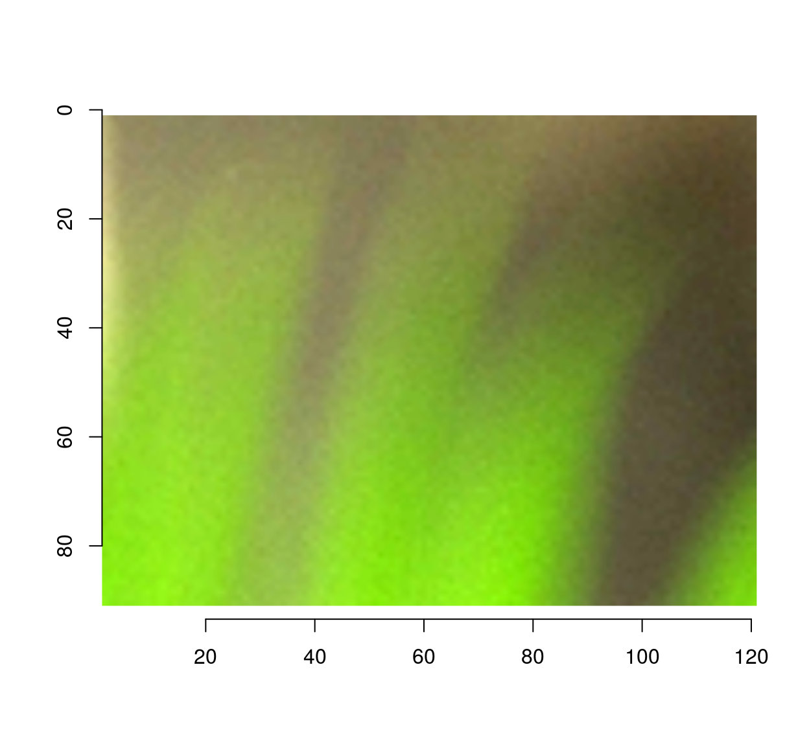
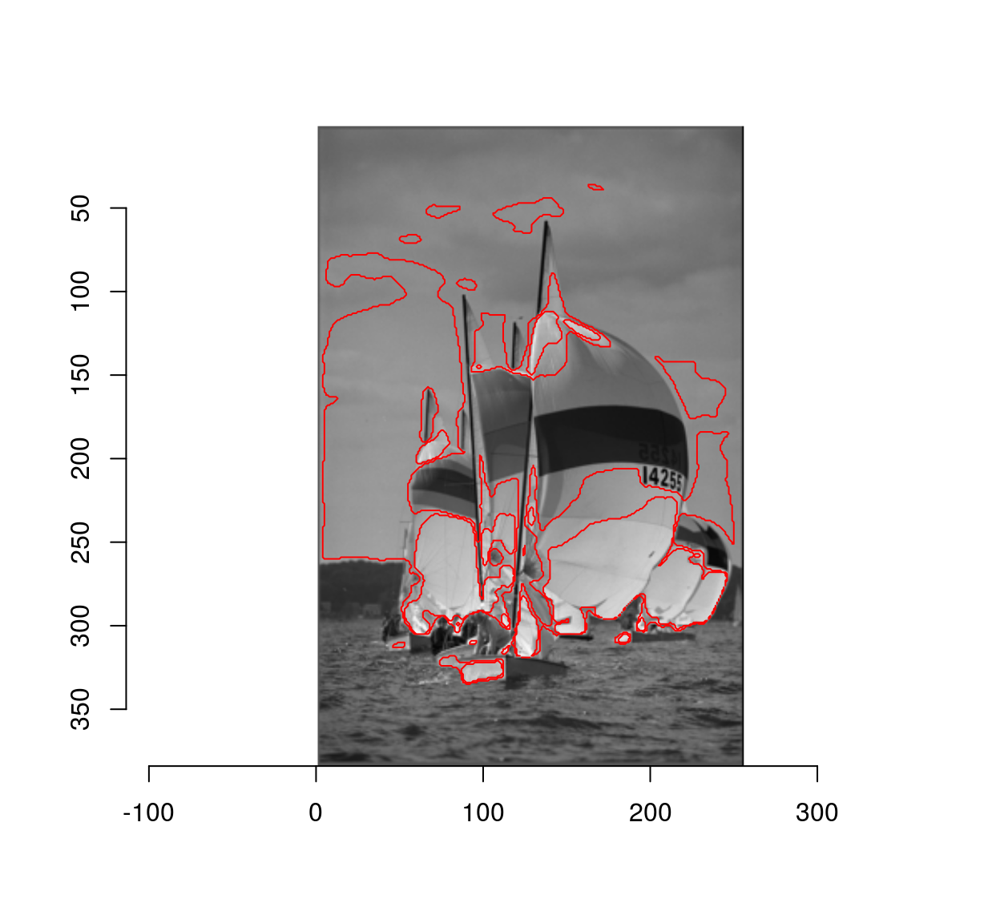
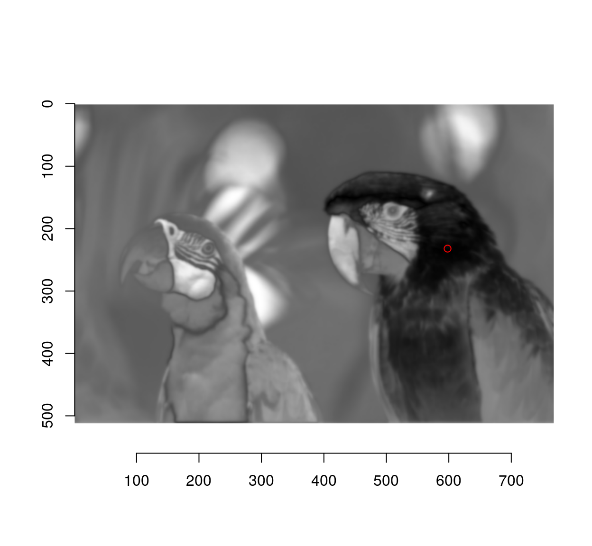
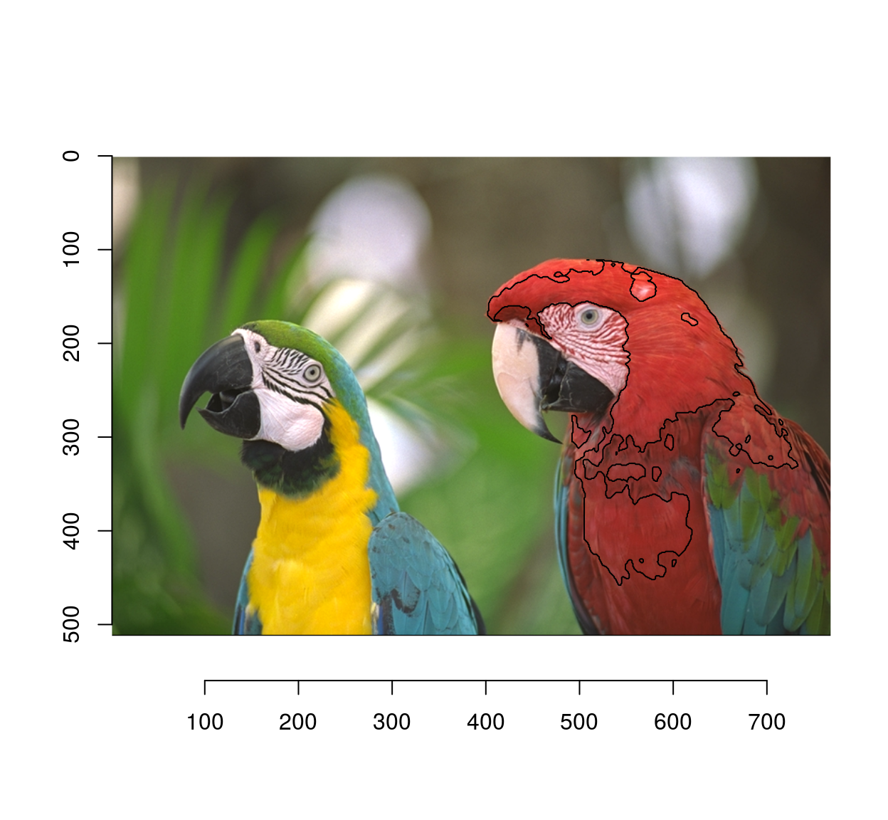
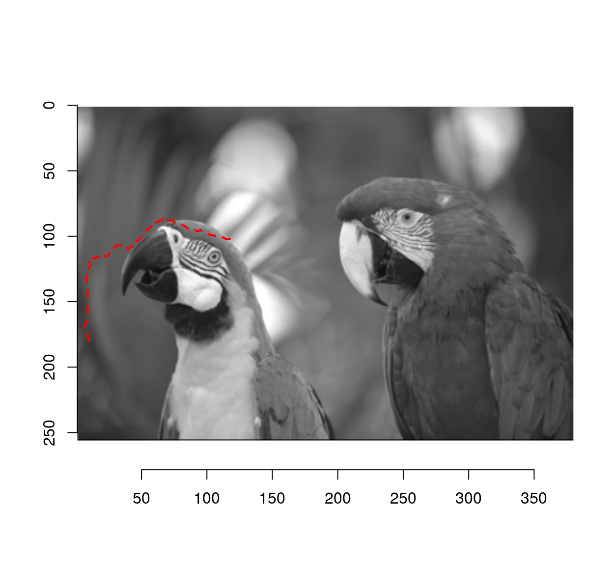
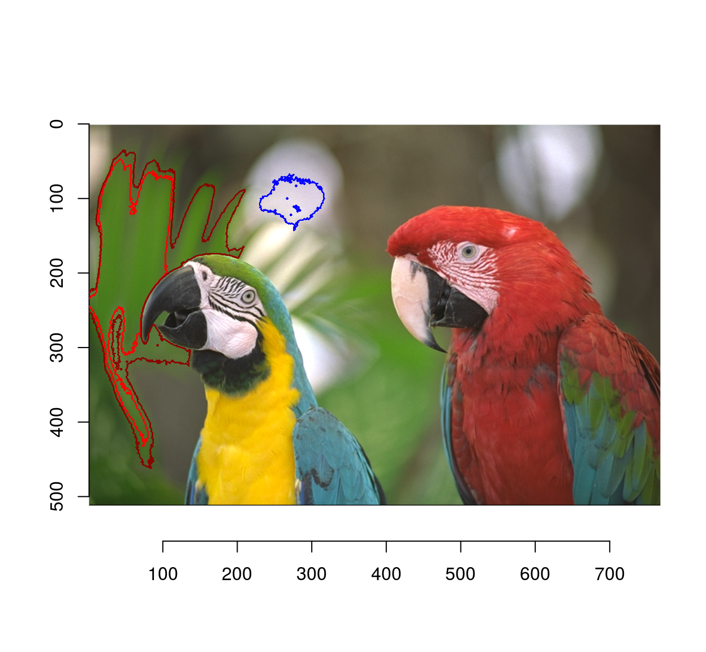

Imager as image editor
Many people will be familiar with the set of tools available in Photoshop and the Gimp (various forms of selections, brushes, erasers, etc.). Here’s a screenshot of what the Gimp has to offer:
gimp-toolbox-icons.png
The goal of this document is to show how to do all these operations in imager.
1 Selection
1.1 Colour picker
This tool looks up the colour value at a certain location: in imager,
color.at(parrots,230,30)## [1] 0.3098039 0.3058824 0.2196078You can also try grabPoint, which is interactive.
1.2 Rectangular selections
To directly obtain a rectangular image subset use imsub:
#A rectangular selection from (10,30) to (150,100)
imsub(parrots,x %inr% c(30,150),y %inr% c(10,100)) %>% plot
If what you need is a pixset, here’s a way:
px <- (Xc(parrots) %inr% c(30,150)) & (Yc(parrots) %inr% c(10,100))
plot(parrots)
highlight(px)There’s also a function to do this interactively called “grabRect”.
1.3 Circular/elliptical selections
Use coordinates and the equation for a circle:
plot(parrots)
px <- (Xc(parrots) - 200)^2 + (Yc(parrots) - 350)^2 < 150^2
highlight(px)Similarly, you can use an elliptical equation to select an ellipse:
plot(parrots)
px <- ((Xc(parrots) - 200)/3)^2 + (Yc(parrots) - 350)^2 < 150^2
highlight(px)A change of coordinates is often useful: here we select a circle centered at the center of the image
#Define a new coordinate system with 0 at the center of the image
Xcc <- function(im) Xc(im) - width(im)/2
Ycc <- function(im) Yc(im) - height(im)/2
px <- (Xcc(parrots)^2+Ycc(parrots)^2) < 100^2
plot(parrots)
highlight(px)1.4 Image color at a point
Use color.at:
color.at(parrots,24,55)## [1] 0.5647059 0.5568627 0.40392161.5 Selection by similarity
For grayscale images this is easy: we want the set of locations \(x,y\), such that
\[ \vert I(x,y) - c \vert < \eps \]
where \(c\) is our target grayscale level, and \(\eps\) is a tolerance. We begin by computing the difference to the target:
boats.gs <- grayscale(boats)
val <- at(boats.gs,180,216) #Grab pixel value at coord (240,220)
D <- abs(boats.gs-val) #A difference map
plot(D,main="Difference to target value")
The distance map can then be thresholded to yield a pixel set:
plot(boats.gs)
highlight(D < .05) # epsilon = .05
Due to noise the regions may be very irregular. Better results can often be obtained using smoothing:
plot(boats.gs)
isoblur(boats.gs,2) %>% { abs(. - val) < .05 } %>% highlight
To select regions by colour similarity, the procedure is very similar, but we now need to compare values channel-by-channel and then sum:
#Select a colour on the red coat of the right-hand parrot
cl <- color.at(parrots,598,232)
#Produces an image of the same size as "parrots"
#filled with colour "cl"
cmp <- imfill(dim=dim(parrots),val=cl)
#Blur, compare, split across channels, compute Euclidean norm
d <- isoblur(parrots,2) %>% { . - cmp } %>% imsplit("c") %>% enorm
plot(d,main="Distance map")
points(598,232,col="red")
plot(parrots)
#Select 10% most similar pixels
(!threshold(d,"10%")) %>% highlight(col="black")
Here’s a function that does all this:
selectSimilar <- function(im,cl,thr="auto",sigma=2)
{
d <- isoblur(im,sigma) %>% { . - imfill(dim=dim(im),val=cl) } %>% imsplit("c") %>% enorm
!threshold(d,thr)
}
plot(parrots)
selectSimilar(parrots,cl,thr="10%",sigma=5) %>% highlight(col="blue")Since the selection is by similarity of colour, CIELab space is more appropriate:
plot(parrots)
sRGBtoLab(parrots) %>%
selectSimilar(color.at(.,330,457),thr="3%",sigma=2) %>%
highlight(col="green")
parrots %>%
selectSimilar(color.at(.,330,457),thr="3%",sigma=2) %>%
highlight(col="red")1.6 Magic scissors
This one does something fairly sophisticated and is left as an exercise to the reader. Roughly speaking, the idea is to find a path from point A to point B that’s orthogonal at every point to the gradient of the image. Here’s something to get you started, using the igraph package (which I don’t know all that well, which is why this bit of code can certainly be improved on). We convert the image to an adjacency graph, where each pixel is a node and there are edges between adjacent pixels. The edge weight is the difference in pixel values.
library(purrr)
library(igraph)
#im <- grayscale(boats) %>% imresize(.5) %>% crop.borders(2)
im <- grayscale(parrots) %>% imresize(.5) %>% crop.borders(2)
##The following function makes a data.frame of links between pixel (x,y) and pixel (x+dx,y+dy)
##I'm sure there's a better way of doing things
make.df <- function(dx,dy) (abs(im-imshift(im,dx,dy)))%>%
as.data.frame%>%
mutate(x.to=x-dx,y.to=y-dy,id.from=paste(x,y,sep=","),id.to=paste(x.to,y.to,sep=",")) %>%
dplyr::select(id.from,id.to,value) %>%
dplyr::rename(weight=value)
##Get all neighbours, convert data.frame to graph
G <- cross2(-1:1,-1:1,function(a,b) abs(a) +abs(b) == 0) %>%
map_df(lift(function(dx,dy) mutate(make.df(dx,dy),dx=dx,dy=dy))) %>%
graph_from_data_frame
#Extract shortest from x=10,y=180 to x=120,y=100, convert back to coordinates
path <- shortest_paths(G,"10,180","120,100") %$% V(G)[vpath[[1]]]%>%
names %>% stringr::str_split(",") %>%
map_df(~ data.frame(x=as.integer(.[[1]]),y=as.integer(.[[2]])))
plot(im)
lines(path$x,path$y,col="red",lty=2,lwd=2)
Notice how the path follows image regions of similar grayscale value.
1.7 Fuzzy selection (magic wand)
Flood selection selects all similar pixels around an initial point:
plot(parrots)
px.flood(parrots,100,100,sigma=.1) %>% highlight
#Higher tolerance
px.flood(parrots,100,100,sigma=.14) %>% highlight(col="darkred")
#Different initial point
px.flood(parrots,300,100,sigma=.1) %>% highlight(col="blue")
2 Drawing curves, text, etc.
To draw stuff on an image you can use the base R plotting tools along with “implot”. implot uses the image as canvas for an R plot, and returns an image. You only need to provide a piece of code that plots whatever you’d like to plot. Note that the coordinate system is the default one for images, i.e. (1…width)x(1…height).
#Let's add some text
parrots.mod <- implot(parrots,{ text(100,100,"ABCDEF",cex=4,col="red") })
plot(parrots.mod)
#Let's plot some random data
implot(parrots.mod,
{ points(width(parrots)*runif(50),height(parrots)*runif(50),col="darkblue",pch=24) }) %>%
plot